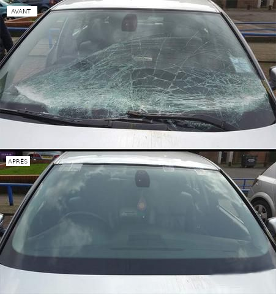

Changement de Pare-Brise : Votre Sécurité Avant Tout
Pourquoi Choisir L'Usine du Pneu pour le Changement de Pare-Brise ?

- Expertise Professionnelle : Nos techniciens sont des experts dans le domaine du vitrage automobile. Ils maîtrisent les techniques de remplacement de pare-brise et garantissent une installation conforme aux normes de sécurité.
- Équipement de Pointe : Nous utilisons des équipements modernes pour le démontage et le montage des pare-brise. Votre véhicule est entre de bonnes mains.
- Conseils Personnalisés : Chez L'Usine du Pneu, nous vous informons sur les options disponibles en fonction de votre modèle de véhicule et de vos besoins.
- Qualité des Matériaux : Nous utilisons des pare-brise de qualité équivalente à ceux d'origine, garantissant une visibilité optimale et une protection accrue.
- Garantie de Satisfaction : Nous sommes fiers de la qualité de notre service. Si vous n'êtes pas satisfait, nous ferons tout notre possible pour résoudre le problème.
Nos Services de Changement de Pare-Brise
- Remplacement de Pare-Brise : Nous remplaçons votre pare-brise endommagé par un nouveau vitrage de qualité.
- Réparation d'Impact : Si votre pare-brise présente un impact, nous évaluons sa réparabilité et effectuons les réparations nécessaires.
- Calibrage ADAS : Après le remplacement du pare-brise, nous recalibrons les systèmes avancés d'aide à la conduite (ADAS) pour assurer leur bon fonctionnement.
Prenez Soin de Votre Sécurité avec L'Usine du Pneu
Chez L'Usine du Pneu, nous sommes déterminés à offrir le meilleur service pour garantir votre sécurité sur la route. N'hésitez pas à nous rendre visite dans l'un de nos centres pour un changement de pare-brise professionnel. Votre sécurité avant tout !